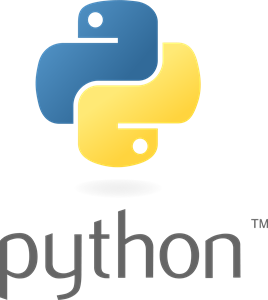

From the start of the season until around the end of February, Hassan and I had been working on the robot's drivetrain code together. Then, as Sayf started working on a website to automate scouting for FRC, I decided to join in on that. Since, we did not have a set due date or needed it to be completed for a certain competition this year, I had time to properly start learning about web development. So, Sayf decided it was best to just have me learn about the tools he was planning to use for building that website, which, as of right now, is to be called "RavenScout". The tools being:
- Flask, a micro web framework written in Python

- Python for back-end

- HTML5, a bit of CSS3, and some JavaScript for front-end

On top of just learning the different tools he wanted me to use for the website, it also required for me to learn about databases and other programming concepts. All of this information was found in the guide he sent, which you can find here: The Flask Mega-Tutorial
I found this assignment challenging and very useful towards my software engineering career. It allowed me to explore different areas of software engineering/development that opened my eyes to new opportunities and technologies. Previously, I found myself to only be interested in back-end development. However, after learning more about building the front-end of websites, I discovered that it could also be interesting for me to work on full-stack development.
If you want to see the code that went into this website, you can visit the repository on github by clicking this link.